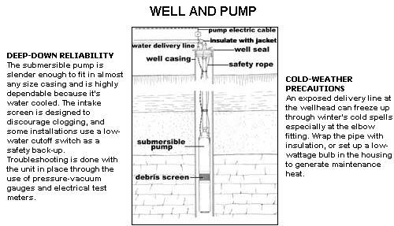
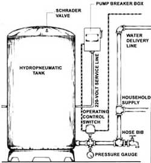
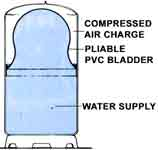
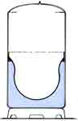
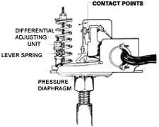

You can keep the flow going if you learn to perform just a few basic maintenance steps.
If you live in the country, or even in a neighborhood outside city limits, chances are pretty good that you get your water from a private well. And whether that well is dug, driven, bored, drilled, pounded or jetted - or even if it isn't a well at all, but a spring or a buried cistern - you probably rely on a pump and deliv ery system to get the water from its source to your tap.
Normally, a modern water system is so reliable you'll probably tend to forget it's there; in fact, like water itself, you probably won't miss it until it stops running. Back in MOTHER'S 100th issue (July/August 1986), professional well-driller Silas Stillwater offered some valuable insight into the process of sinking a well. Here, we'll look beyond that to the role of the pump, controls and delivery equipment . . . and to the steps you can take to keep them properly maintained.
A typical home water-delivery system is so uncomplicated that it takes only moments to describe. Unfortunately, variations from the typical do exist, and they have a way of clouding a clear understanding of the basic layout.
Let's cover the essentials first. The key to the whole operation is, of course, the pump. And regardless of what type it is (reciprocating piston, centrifugal, turbine or jet-ejector, for either shallow or deep well applications), its purpose is to move water and generate the delivery force we call pressure. Sometimes - with centrifugal pumps in particular - pressure is not referred to in pounds per square inch but rather as the equivalent in elevation, called head. No matter; head in feet divided by 2.31 equals pressure, so it's simple enough to establish a common figure.
Water delivered under pressure does not go directly to your faucet, but instead is held in some form of storage for household use. By far the most popular and sanitary method employs a 30- or 42-gallon hydropneumatic tank, which provides a water reserve and a capacity for storing pressure. Now, even if your high-school physics class is a faded memory, you may recall that water cannot be compressed; air, however, can be, and that's exactly what happens when the pump fills this tank. The compacted air retains the pump's pressure for the entire system.
The prime reason for this additional water reservoir is to prevent the pump from switching through the on-and-off cycle every time a tap is opened - or from running constantly when there's a steady demand. Both situations can overheat the motor and shorten its life span. A secondary benefit is that the tank stores enough water to answer the household's peak demand periods (shower, laundry and meal times) even if the constant flow of the well could not.
The third essential component is the operating control for the pump. Its job is simple: When water pressure falls below a minimum working level - as is the case when you run a faucet for any length of time - the control switches the pump on. Within moments, enough water is forced into the pressure tank to snap the switch off and shut down the pump.
Beyond this, there are additional elements that might be included in your system. These could consist of such things as water-conditioning equipment (to remove or add minerals, exchange ions or destroy bacteria), a turbidity filter (to remove particulate matter), a booster pump (used when the house is located far from or high above the well pump), flow-control or check valves (the first limits excessive water flow, the second prevents backward flow) and perhaps an air-volume control (to maintain the correct balance of air and water in storage).
Granted, at this point even the basics sound complicated. But the good news is that, for the most part, your water delivery system is pretty much self-governing. Put in the now-familiar terminology, most components are not "user serviceable" - and for good reason. Could you really imagine yourself hauling 50 pounds of pump and cable up a 200' well casing without a snag . . . or installing a pasteurizing or ultraviolet disinfecting unit by the seat of your pants? Probably not. You can, however (and probably should), make it a point to learn to conduct a simple inspection of the accessible components in your system, and also count on doing some preventive maintenance, even if only once or twice a year.
If your pump and delivery system were installed by a professional, you can probably assume that the engineering was correct. In practical terms, this means that any water supply problems you may have aren't likely to be caused by an improperly chosen pump, inadequately sized piping or some other inherent design fault.
Given that assumption, you can tackle your inspection in an orderly fashion. Start by examining any exposed portion of the water delivery line at the wellhead for leaks or excessive corrosion. Pay particular attention to any water gathered at the well seal (the top of the metal casing); it shouldn't be there. Many installations now incorporate what's known as a pitless adapter, which allows the delivery line to exit the casing below the frost line, in which case you won't see it. But if the pipe is visible, chances are it's susceptible to freezing. Protect it by wrapping the pipe and fittings with a urethane foam insulation jacket. While you're at the water source, take a close look at the pump's electric cable. It shouldn't be frayed, cut or brittle from heat. Such damage not only represents a hazard, but can be an indicator of pump inefficiency as well.
Next, make your way to the pressure tank and control. The tank can be located in the well shed (if you have one), but more than likely it's in a utility room or basement at the house. Again, check for leaks in the delivery line, including the portion that might run through a crawlspace or other inconspicuous area.
Following this, you can perform some necessary maintenance and make a simple test at the same time. First, switch of the pump at the breaker box, and run a bathtub faucet until water stops coming out the spigot. Close the faucet, then locate the drain fitting at the bottom of the pressure tank and connect a garden hose to it. (If the drain isn't equipped with a hose bibb or some other valve and hose fitting, now's the time to get one installed.) Pull the hose outside and turn the pump back on for a few minutes to flush the tank of accumulated sand and debris.
With that done, shut the pump down, disconnect the hose, and close the outlet valve. Then, using a standard tire gauge, check the precharge pressure at the Schrader valve in the top of the tank. It should be between 20 and 30 psi; the exact figure will depend upon the pressure at which the pump cuts in, and to some extent whether the pump is sized to meet peak demand.
In fact, the optimum setting will be specific to your system, but one rule of thumb - generally applied when the pump can't fully provide for those periods of peak water usage - is to create a supplementalsupply by charging the tank to a level somewhat below the pump cut-in pressure. This works well when that cut-in occurs at 30 psi, but is less efective at lower pressures. Tank manufacturers, in fact, recommend that both the precharge and the cut-in pressures be the same - probably the best choice if supply doesn't seem to be a problem.
Charging the tank, by the way, involves nothing more than adding air to it with a tire pump. But before you do, determine the factory-set cut-in and cut-out pressures of your control switch. The correct settings should be indicated on the switch housing (the switch itself may be at the pump, if it's aboveground, or in the delivery line near the tank).
If no specifications are available, turn the pump back on and note the reading at the water line pressure gauge when the pump switch shuts off with an audible click. (If you don't have a gauge, this too should be on your installation list.) Then run some water and note again what the pressure reading is when the pump clicks on. The standard settings are a cut-in pressure of 20 psi and a cut-out of 40 psi. Recently, because of the prevalence of pressure-sensitive water-using appliances, a higher range - 30 to 50 psi - is becoming the norm.
At any rate, the switch is usually set to cut in at a fixed pressure, but can be adjusted to cut out at any pressure above that. The smaller differential adjusting nut controls the lever spring which sets the upper limit; tightening the nut increases the water pressure. But heed these two warnings: Shut the breaker off before uncovering and adjusting the pressure switch. A 220-volt accident can easily and instantly be fatal. Also, never set the cut-out pressure higher than 25 psi above the cut-in; it could cause the pump to overheat and fail.
It's worthwhile to note that, though this type of pump control is very common, models that use sensors to determine the water level in the well casing (or floats to monitor reservoir levels) are not unheard of. These can be complicated, and should be serviced by someone with experience. Likewise, systems with plain steel pressure tanks may employ air-volume controls that are best fixed by a professional.
If your system is fitted with water-conditioning equipment or filters of any kind, you can count on their needing service periodically. Generally, these sophisticated components are fully guaranteed and may even come with a service contract. If this isn't the case, make an effort to find out from the installer how often the units require attention, what warning signs to look for if performance isn't up to par and, of course, whether you can do the maintenance yourself.
Finally, don't ignore the electrical features of your water system. A pump is especially sensitive to power surges caused by local lightning strikes and motor overloading. The first, by far more frightening, can be controlled with the proper use of one or more lightning arresters placed at the pump control box, the service entrance or both. Overloading occurs when the pump cycles too often or is prevented from spinning freely; overheating caused by a low water level or low pressure is just as harmful. Modern pumps have built-in thermal protection, but external back-up safety controls are always a good investment, and something your local well driller or electrician should be familiar with.
Though water seems to be everywhere, it's not so easy to come by when it stops running. A few hours of time now may keep you in gallons for some time in the future - it's well worth the investment.
Editor's Note: There are two excellent books available which go into much greater detail on home water systems. The Home Water Supply , by Stu Campbell ($12.95 plus $2 for 4th class mail from Storey Communications, Inc., Schoolhouse Rd., Pownal, VT 05261, Order No. 324-0), is a technical yet amicable account of the author's experiences with wells, ponds, water delivery and treatment methods in northern Vermont. Planning for an Individual Water System , prepared by G. E. Henderson, is published by the American Association for Vocational Instructional Materials ($12 from AA VIM, 120 Engineering Center, Athens, GA 30602; quantity discounts available) and is a thoroughly illustrated student text with a simplified technical format.
|
FULL |
 EMPTY |
 OPERATION CONTROL SWITCH |
|
 |
 |
 |